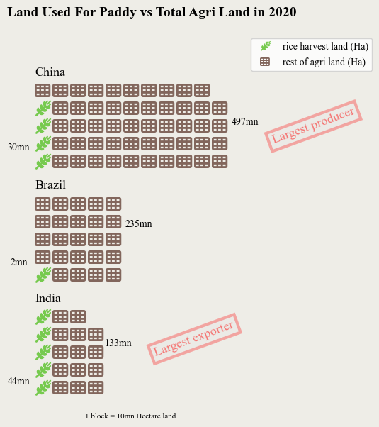
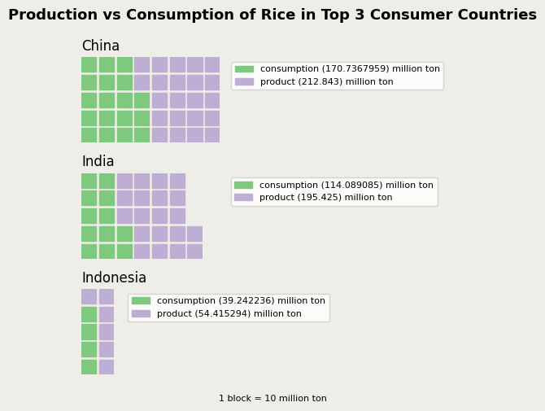

World's Largest Rice Exporter Country Produces Less Than China
India produces less rice than China. India also uses more agricultural land than China for paddy. But it is India's policy decision to curb rice exports that could affect the rice prices in multiple parts of the world. It is a potential cause of concern for rice-lovers of the countries that do not produce enough rice of their own.
Shalaka Shinde | Feb 5, 2023

Image by Quang Nguyen vinh from Pixabay
* The prompt for this story was "something you miss from home".
* My answer was, "I miss eating rice-dal with my family"
Rice forms an essential part of diets of a number of countries all over the world. It is the second largest produced grain in the world, in constant competition with wheat and maize (corn). The uses of rice range from making of a quick meal to drying out your phone to making bad-quality adhesive to making Japanese sake. 😉 The highest amount of rice is grown in China. The hybrid paddy agriculture methods have revolutionised China's rice production in the past few decades. With such a monopoly on production, it is the policy decisions of China's neighboring country, India, that affect the world more than China's.
A trade policy decision by the Indian government caused ripples in the food-trade news cycles in the fourth quarter of 2022. In September 2022, India announced a duty of 20% on non-basmati varieties' rice exports and banned export of broken grain rice. "Central Government is satisfied that export duty should be levied on certain articles and that circumstances exist which render it necessary to take immediate action," read the statement issued by the Finance Ministry of India on September 8, 2022.
Why is it that this decision is pivotal for other rice-consuming countries? Because India is the largest exporter of rice in the world. China does not come close to the rice export percent share of India. Other Asian countries like Thailand, Vietnam, Pakistan individually form more than double the share of rice exports than China.
The farming methods of China has ensured that the amount of rice it can extract from paddy farms is higher than the variety in India. Chinese scientist Yuan Longping's research, as written in his paper "Male Sterility in Rice" and published in 1966, helped China develop world's first hybrid rice variety, according to Nature journal. This enables China to produce more rice than India, second largest producer, with much less land dedicated to paddy than India.
However, it still imports large quantities of broken rice from India. So when the Indian government announced a complete ban on export of broken rice, it became a cause for concern for countries like China that import broken rice from India. The reason for India's domination in rice exports is due to the overproduction of rice in the country.
Export of rice at cheaper rates than its competitors is fueled by the government's purchase of large quantities of rice and wheat from farmers. News reports cited reasons like water-stress and untimely rain and resultant low rice yeild of India. However, for an Indian missing rice from home in New York, it means increasing cost of comfort food.
GitHub repository of the project.